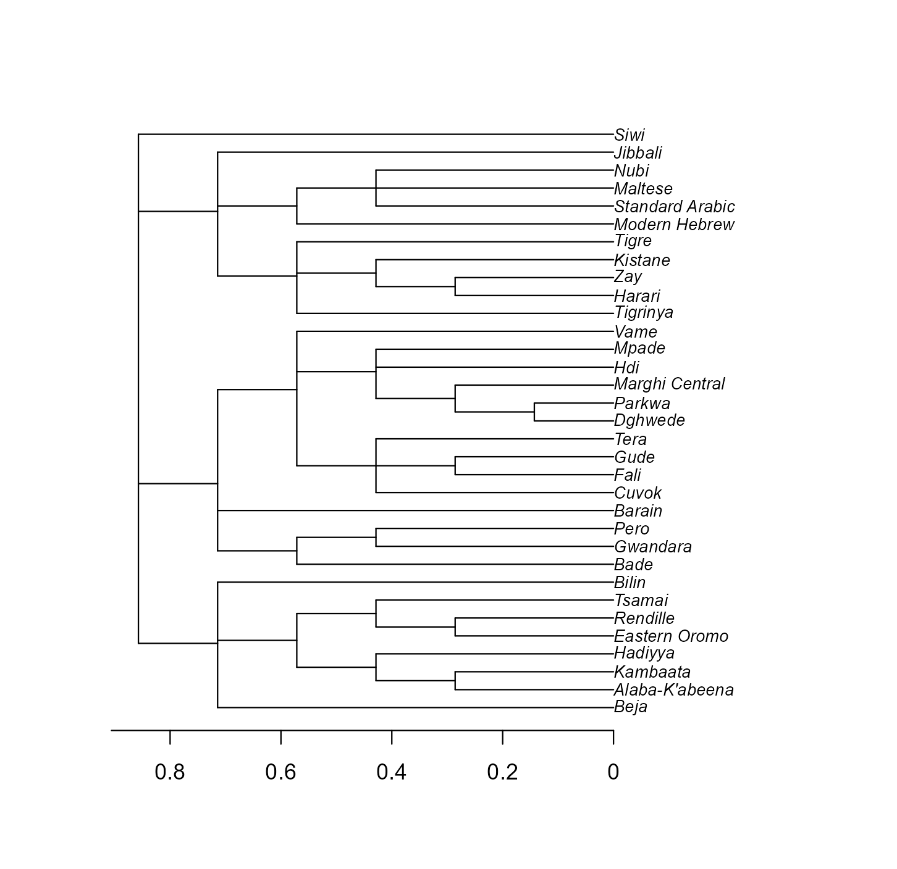
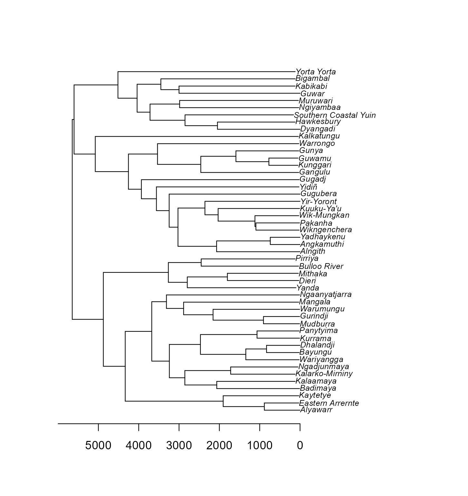

2 Trees: the raw material
Before any phylogenetic model there is a tree, and most of the work is getting one that matches your data. Read it, check it against the languages, look at it, and build one from a classification when none exists.
2.2 What a tree object holds
read.tree() reads the Newick format, which is how trees from Glottolog, D-PLACE and most phylogenetic software are distributed. read.nexus() reads the other common format. Either returns a phylo object.
##
## Phylogenetic tree with 500 tips and 264 internal nodes.
##
## Tip labels:
## adyg1241, beja1238, alab1254, kamb1316, hadi1240, east2652, ...
##
## Unrooted; includes branch length(s).## [1] "adyg1241" "beja1238" "alab1254" "kamb1316" "hadi1240" "east2652"## tips internal_nodes
## 500 264The tips are the languages, labelled here by Glottocode. The internal nodes are the groupings: subgroups, families, and at the top a root that joins everything.
Two properties matter for what follows.
## [1] TRUE## [1] FALSEThe tree is ultrametric: every language is the same distance from the root, as it should be for languages all spoken today. It is not binary, and that is fine. A classification often says “these six languages form a group” without saying how the six relate, and the tree records that as one node with six branches. Every model in this book accepts such trees.
2.3 Does the tree match the data?
This check prevents more wasted afternoons than any other line in the book. Every language in the data must be a tip, and every tip must be a language in the data.
## character(0)## character(0)Both are empty here because the two files were built together. With your own data they will not be. Languages missing from the tree have to be dropped from the analysis or added to the tree. Tips missing from the data are pruned:
some <- d$glottocode[d$macroarea == "Australia"]
small <- keep.tip(tree, some) # the tree of just these languages
small##
## Phylogenetic tree with 68 tips and 34 internal nodes.
##
## Tip labels:
## wany1247, erre1238, anin1240, nung1290, djau1244, remb1249, ...
##
## Unrooted; includes branch length(s).drop.tip() does the reverse, removing the tips you name. Pruning keeps the branch lengths between the tips that remain, so a pruned tree still says the right thing about them.
It also helps to put the data in the order of the tips, so that row i and tip i are the same language:
## [1] TRUE2.4 Look at it
A tree of 500 tips is hard to read (Chapter 1 drew it as a fan). One family is easy. Prune to Afro-Asiatic and swap the Glottocodes for names.
aa <- keep.tip(tree, d$glottocode[d$family == "Afro-Asiatic"])
aa$tip.label <- d$name[match(aa$tip.label, d$glottocode)]
plot(aa, cex = 0.75)
axisPhylo()
Figure 2.1: The Afro-Asiatic languages of the sample as the tree has them. Each split is a level of the Glottolog classification; the scale is the share of the tree’s height.
Read it from the left. The first split separates the main branches of the family; each further split is a subgroup inside the one before. Two languages are as related, for the purposes of a model, as the length of the path they share from the root.
2.5 What the branch lengths mean
A classification gives only the shape of a tree. Branch lengths have to come from somewhere, and where they come from is an assumption you should be able to state.
In this tree every level of the Glottolog classification is one step, the family counts as a level, and tips are stretched so that all languages end at the same height. As a consequence, two languages share as much history as they share levels of classification.
The usual alternatives:
- Grafen’s lengths.
compute.brlen(tree, method = "Grafen")sets the height of each node from the number of tips below it. Large groups come out old and small groups young (Grafen 1989). - All branches equal.
compute.brlen(tree, 1)is simple, but languages no longer end at the same height. - A dated tree. For families with a published Bayesian phylogeny, the branch lengths are estimated times. That is the best case, and the models in the next chapters use such a tree exactly as they use this one.
grafen <- compute.brlen(aa, method = "Grafen")
ours <- as.vector(vcv(aa, corr = TRUE))
theirs <- as.vector(vcv(grafen, corr = TRUE))
round(cor(ours, theirs), 2)## [1] 0.85The number is the correlation between the two correlation matrices for this family. The shape of the tree is the same under both conventions, and the shape does much of the work, but the conventions are not interchangeable. Chapter 12 shows how to find out whether such a choice matters for your result.
What this assumes. Any tree built from a classification assumes the classification is right and that depth in it is comparable across families. Glottolog is deliberately conservative: it groups only what has been demonstrated, so many families are small and there are many isolates. Each isolate is its own lineage and shares nothing with anything else.
2.6 Build a tree from a table
If all you have is columns that classify the languages, as.phylo() turns them into a tree. The formula lists the levels from the top down. The sample file has only the family, so this builds the coarsest possible tree, family then language:
tab <- data.frame(family = factor(d$family), language = factor(d$glottocode))
flat <- as.phylo(~family / language, data = tab)
flat <- compute.brlen(flat, method = "Grafen")
flat##
## Phylogenetic tree with 500 tips and 47 internal nodes.
##
## Tip labels:
## adyg1241, beja1238, alab1254, kamb1316, hadi1240, east2652, ...
## Node labels:
## , Afro-Asiatic, Algic, Arawakan, Arawan, Atlantic-Congo, ...
##
## Unrooted; includes branch length(s).With a genus or subgroup column you would write ~family / genus / language, and each extra level adds structure. A tree with only the family level is the family random intercept of the next chapter drawn as a picture: all languages of a family equally close, and no information below that.
2.7 Where trees come from
Language trees come from three kinds of source, and the kinds differ in what a branch length means.
Glottolog publishes its classification as one Newick tree per family (Hammarström et al., n.d.). It covers every known language, so any sample can be given a tree. It has no branch lengths, which is why this book had to choose a convention for them.
For a growing number of families there is a dated phylogeny, inferred by Bayesian methods from cognate-coded vocabulary. Its branch lengths are estimated years, and it comes with a posterior sample of trees that shows how uncertain the estimate is. Well-known examples cover Austronesian (Gray et al. 2009), Indo-European (Bouckaert et al. 2012; Chang et al. 2015), Bantu (Grollemund et al. 2015), Pama-Nyungan (Bouckaert et al. 2018), Sino-Tibetan (Sagart et al. 2019) and Dravidian (Kolipakam et al. 2018). A dated tree is still an estimate: the two Indo-European studies cited here put the root of the family thousands of years apart.
Phlorest collects published language phylogenies and distributes each in the same layout: a summary tree, the posterior sample, and a table that gives the Glottocode of every tip (Phlorest, n.d.). It held about thirty studies when this chapter was written. D-PLACE distributes many of the same trees alongside cultural data (Kirby et al. 2016).
A world sample needs a tree that spans families, and two are in use. Jäger (2018) infers one for several thousand languages by automated comparison of the word lists in the ASJP database. Bouckaert et al. (2022) build a global tree by joining dated family trees with Glottolog’s groupings and release a posterior sample of such trees; Skirgård et al. (2023) use it for the Grambank analyses. In both trees the branches that join one family to another come from the method and its assumptions, because historical linguistics has not demonstrated those relationships. The tree in this book takes the cautious position and gives different families no shared history.
| Your sample | A reasonable tree |
|---|---|
| One family with a published phylogeny | The dated tree from Phlorest, with its posterior sample if you can |
| One family without one | Glottolog’s tree for the family and a stated branch-length convention |
| Many families | Glottolog trees joined at the root, as here, or a global tree. Fit both if you can. |
2.8 A dated tree from Phlorest
The sample has 54 Pama-Nyungan languages, and Phlorest has the dated tree of Bouckaert et al. (2018). Read the summary tree and the table of tips from the repository.
src <- paste0("https://raw.githubusercontent.com/phlorest/",
"bouckaert_et_al2018/main/cldf/")
taxa <- read.csv(paste0(src, "languages.csv"))
dated <- read.nexus(paste0(src, "summary.trees"))
dated##
## Phylogenetic tree with 306 tips and 305 internal nodes.
##
## Tip labels:
## Adnyamathanha, Parnkala, Guyani, Kaurna, Narrungga, Nukunu, ...
##
## Rooted; includes branch length(s).## ID Glottocode
## 1 Adnyamathanha adny1235
## 2 AghuTharrnggala aghu1254
## 3 Alngith alng1239
## 4 Alyawarr alya1239The tips carry the names the authors used. The Glottocode column of the table says which language each tip is, and that column is the link to your data.
code <- taxa$Glottocode[match(dated$tip.label, taxa$ID)]
c(tips = length(code), distinct_glottocodes = length(unique(code)))## tips distinct_glottocodes
## 306 226Several tips share a Glottocode, because a phylogeny often includes dialects that Glottolog counts as one language. Keep the first tip of each language, keep only the Pama-Nyungan languages of the sample, and relabel the tips with their Glottocodes.
pn <- d$glottocode[d$family == "Pama-Nyungan"]
keep <- !duplicated(code) & code %in% pn
dated <- keep.tip(dated, dated$tip.label[keep])
dated$tip.label <- taxa$Glottocode[match(dated$tip.label, taxa$ID)]
c(in_sample = length(pn), in_dated_tree = Ntip(dated),
missing = length(setdiff(pn, dated$tip.label)))## in_sample in_dated_tree missing
## 54 48 6named <- dated
named$tip.label <- d$name[match(named$tip.label, d$glottocode)]
plot(named, cex = 0.7)
axisPhylo()
Figure 2.2: The Pama-Nyungan languages of the sample on the dated tree of Bouckaert, Bowern and Atkinson (2018). The axis is in years before the present.
Now compare what the two trees say about the same languages. Build both correlation matrices for the languages the dated tree has, and compare them pair by pair.
both <- dated$tip.label
# from the full tree, so that the family's own stem is counted
ours <- vcv(tree, corr = TRUE)[both, both]
theirs <- vcv(dated, corr = TRUE)[both, both]
pairs <- upper.tri(ours)
round(cor(ours[pairs], theirs[pairs]), 2)## [1] 0.74## classification dated
## 0.19 0.11The first number is the correlation between the two matrices across all pairs of languages. The second line is the average correlation between two Pama-Nyungan languages under each tree. The two trees rank the pairs of languages similarly but not identically. The dated tree also makes the average pair less alike than the classification does, because in the dated tree most of the time since the family began lies on branches that the languages do not share.
To use the dated tree in a model, pass its matrix wherever the next chapters pass A. In a world sample you would keep the classification tree for the other families and replace this family’s block of the matrix. The languages missing from the dated tree have to be dropped, or attached by hand with bind.tip() from phytools.
The repository also holds posterior.trees.zip, a sample of trees from the posterior. Fitting the model to each of, say, 100 of them and pooling the draws carries the uncertainty of the tree into the slope. In brms, brm_multiple() does this when given one data2 list per tree.
2.9 How tree-like is a feature?
With a tree in hand, the first question about any feature is how closely it follows the tree. Chapter 1 used Pagel’s λ. Blomberg’s K is the other standard measure: K near 1 means relatives resemble each other as much as Brownian motion on this tree predicts, K near 0 means the tree is irrelevant (Blomberg et al. 2003).
log_cons <- setNames(log(d$n_consonants), d$glottocode)
phylosig(tree, log_cons, method = "K", test = TRUE, nsim = 999)##
## Phylogenetic signal K : 1.14463
## P-value (based on 999 randomizations) : 0.001001Consonant inventory size is strongly tree-like. That is a warning for any regression that uses it, and the reason Chapter 4 returns to it.
With your own data. Glottolog publishes its classification as Newick trees, one per family, and D-PLACE collects published dated phylogenies with Glottocodes on the tips. Whatever the source, run the two
setdiff()lines first, prune withkeep.tip(), and plot at least one family you know well, so that you can spot languages the tree puts somewhere you do not believe. The model takes the tree as given.
2.10 What to carry forward
- A
phyloobject needs tip labels that match a column of your data exactly. Check both directions. keep.tip()anddrop.tip()prune;match()puts the data in tip order.- Branch lengths from a classification are a convention, so say which one you used.
- A tree built from a family column alone carries the same information as a family random intercept.
The next chapter turns the tree into a matrix, the form a regression can use.
2.11 Further reading
How earlier studies obtained their trees. Most typological studies have had no tree at all and used the family, or the genus, as a grouping factor: Dryer (1989) samples genera within areas, and Jaeger et al. (2011) give family a random intercept. Studies of single families could use dated Bayesian phylogenies, as Dunn et al. (2011) did for word-order correlations in four families. Global studies need a global tree. Skirgård et al. (2023) use one assembled from published family phylogenies and the Glottolog classification, and Guzmán Naranjo and Becker (2022) use Glottolog family trees much as this book does. Jäger (2018) infers a worldwide tree directly from word lists.
- Phlorest (Phlorest, n.d.) and D-PLACE (Kirby et al. 2016) are the places to look for a dated tree of your family before settling for a classification.
- Grafen (1989) introduced phylogenetic regression for trees built from taxonomies, including the branch-length convention that bears his name.
- Münkemüller et al. (2012) compare the measures of phylogenetic signal, and Fritz and Purvis (2010) give the D statistic for binary features (
caper::phylo.d()). - The Glottolog classification itself is documented by Hammarström et al. (n.d.).